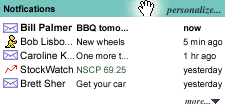

|
flash specificationChris Waterson (waterson@netscape.com) Steve Lamm (slamm@netscape.com) OverviewThis document is the technical specification for the Flash Panel. The Flash Panel is a panel that contains up-to-the-minute information about events that are of direct importance to the current user, which might include:
This specification describes:
Flash Panel Content Format The figure to the right shows a sample of the Flash Panel. The panel is a list (potentially hierarchical) of individual Flashes. One Flash is listed per line, and consists of
Clicking on an individual Flash opens an appropriate viewer for the flash information; for example, mail-news for an email. Details
Display. The Flash Panel's content area will be implemented using a XUL tree widget. The tree widget's content will be generated from an RDF composite data source that aggregates Flash information from local, remote, and JavaScript Flash Services. Storage. The XUL that specifies the Flash Panel will be contained in a local file that is standard across profiles. This file will be considered "trusted" and will run JavaScript code that accesses sensitive information on the user's machine. Initialization. The Flash Panel's onload handler will open the Flash Registry. The Flash Registry is a per-profile database that describes the Flash Services that are to be displayed in the Flash Panel. Each Flash Service is itself an RDF datasource that is named via an RDF identifier, and will be added to the tree control's composite data source. Style Sheets. The Flash Registry will also contain information about CSS style sheets that must be applied to the Flash Panel. Adding a Flash. The tree control's root resource will refer to a well-known RDF resource in the Flash Registry, NC:FlashRoot. Each Flash Service datasource may assert an arc from NC:FlashRoot to its Flash: this is how Flashes will appear in the tree control. Flashes will be assumed to be attached to the root via the http://home.netscape.com/NC-rdf#child property. Each Flash Service may assert as many flashes as it likes: no attempt will be made to limit the number of Flashes that a service displays. Flash Properties. Each Flash must have the following properties to be displayed correctly in the Flash Panel (the nc: prefix is an abbreviation for the http://home.netscape.com/NC-rdf# namespace prefix):
Removal. Each Flash Service is responsible for determining when a Flash is no longer relevant and should be removed from the Flash Panel. A Flash Service does this by simply unasserting the relationship between the NC:FlashRoot and the Flash. Sorting. The tree control will support "natural ordering", so Flashes may be arranged by the user using drag-and-drop. By default, the Flash Panel will sort Flashes by date, from most recent to least recent. Flash ServicesConceptually, a Flash Service is a provider of Flash notifications to the Flash Panel. Technically, a Flash Service is no more than an RDF datasource that is named in the Flash Registry. Local Flash Services
A Local Flash Service is typically a built-in RDF datasource that wishes to display information in the Flash Panel; for example, the number of unread POP mail messages. Making an existing built-in RDF datasource into a Local Flash Service involves the following: The Flash Panel's composite datasource will use the standard RDF observer mechanisms, which will notify the Flash Panel and trigger a reflow when relevant information in the local datasource changes. Remote Flash ServicesA Remote Flash Service is a Flash Service that is provided by a remote server. The client periodically polls the Remote Service for an RDF/XML file that contains Flash information. The RDF/XML from the remote server is describes the Flash according to the requirements above. A sample Remote Flash is illustrated in Appendix 2. Polling. The Flash Registry entry for a Remote Flash Service names a remote URL that will be periodically polled for updates. The interval at which polling occurs is specified via the http://home.netscape.com/NC-rdf#poll-interval property, which should refer to an RDF literal that is the decimal poll interval, in seconds. If this value is not specified, no polling will occur. Alternatively (or additionally), we may want to use server-specified expires information in the HTTP headers to allow dynamic, server-provided refresh information. Replacement policy. When the client polls the Remote Flash Service for a new RDF/XML file, the contents of the new file will logically replace the contents of the old file. That is, the client will compute the logical difference between the graph specified in the old file and the graph specified in the new file. The RDF subsystem will only send RDF notifications to the Flash Panel for values that have changed. JavaScript Flash ServicesA JavaScript Flash Service is a Flash Service that uses JavaScript to "push" a Flash into the Flash Panel. Specifically, it directly manipulates a private RDF datasource using a set of simple Flash APIs to programmatically add and remove Flashes to the Flash Panel. Private datasource. A JavaScript Flash Service will use its RDF persistent client store to store information about Flashes. The persistent client store is a "super cookie" that keeps an arbitrary RDF graph on a per-domain or per-URL basis. TBD. URI syntax for PCS datasources, re: Registering a PCS data source with the Flash Registry. JavaScript APIs. The datasource may be manipulated directly using the low-level RDF APIs (e.g., Assert() and Unassert()); however, this is tedious and error prone, so we will provide a set of "wrapper" APIs that do most of the grunt work: void addFlash(datasource, flashID, type, source, description, timestamp, miscAttrs). Add a Flash with to the specified datasource. The flashID is used to identify the Flash, the type, source, description, and timestamp, are as specified above. The miscAttrs parameter specifies a comma-separated string of attr=value pairs that are added to the Flash; e.g., to trigger CSS rules based on attribute selectors. void removeFlash(datasource, flashID). Remove the Flash with the specified flashID. Array getAllFlashes(datasource). Retrieve all of the Flashes currently contained in the datasource. Returns an array of flashIDs. RegistrationInformation about Flash Services is maintained in the Flash Registry. A Flash Service installs (or uninstalls) itself by modifying the Flash Registry. Flash RegistryThe Flash Registry is a per-profile database that stores information about which Flash Services are currently available in the Flash Panel. Storage. The Flash Registry is stored in the RDF/XML file flash-registry.rdf. A copy of this file is located in each user's profile directory. A default version of this file will be copied to the user's profile directory as part of the profile creation process. (See Appendix 1 for an example of how this file might appear.) Alternatively, the Flash Registry may simply be a well-known "section" of the Registry. Access. The Flash Registry datasource will be accessible via the RDF service manager using the NC:FlashRegistry datasource identifier. Flash Datasources. A well-known URI, NC:FlashDataSources, will be used to identify the datasources that are to be included in the Flash Panel. NC:FlashDataSources will be an RDF Bag, and will be enumerated when the Flash Panel is first loaded. Each element of the Bag is assumed to be an RDF resource whose URI names an RDF datasource using a datasource identifier. During registration, a Flash Service may add an element to the NC:FlashDataSources Bag that indicates the RDF datasource identifier to load for that Service. Style Sheets. A well-known URI, NC:FlashStyleSheets, will be used to identify additional style sheets that must be loaded into the Flash Panel; e.g., for correct display of Flash icons. NC:FlashStyleSheets will be an RDF Bag, and will be enumerated when the Flash Panel is first loaded. Each element of the Bag is assumed to be an RDF literal that names the URL of a CSS style sheet. During registration, a Flash Service may add an element to the NC:FlashStyleSheets Bag that indicates a style sheet to load for that service. Flashes. A well-known URI, NC:FlashRoot, will be used as the base URI from which the flashes themselves are enumerated. Each Flash Service datasource may make assertions about NC:FlashRoot; the composite datasource in the Flash Panel will aggregate these assertions to produce a coherent collection of Flashes. Registration Procedure
TBD. JavaScript APIs exist today that allow direct manipulation of an RDF/XML datasource. Therefore, installing and removing Flash Services is simply a matter of modifying the Flash Registry. Which in turn is simply a matter of writing JavaScript that adheres to the policies that describe the Flash Registry format, above. Ideally, we should implement JavaScript functions that "wrap" the necessary registration operations, primarily so that it's easier for a third party to get right; e.g., The Flash Panel will need to be rebuilt whenever the Flash Registry is modified. Appendix 1: Sample flash-registry.rdfBelow is an example of how flash-registry.rdf might look.
<RDF:RDF xmlns:RDF="http://www.w3.org/TR/WD-rdf-syntax#"
xmlns:NC="http://home.netscape.com/NC-rdf#">
<!-- The "hangar" from which all flashes dangle -->
<RDF:Description ID="NC:FlashRoot" />
<!-- The Flash Services -->
<RDF:Bag ID="NC:FlashDataSources">
<!-- A Local Flash Service, Mail/News -->
<RDF:li>
<RDF:Description about="rdf:mail" />
</RDF:li>
<!-- A Remote Flash Service, some Netcenter Gizmo -->
<RDF:li>
<RDF:Description
about="http://home.netscape.com/flashes/get.cgi?user=waterson">
<NC:poll-interval>60</NC:poll-interval>
</RDF:Description>
</RDF:li>
<!-- A Panel-based Flash Service, exact URI syntax still TBD -->
<RDF:li>
<RDF:Description
about="pcs://home.netscape.com/webmail/flash.rdf" />
</RDF:li>
</RDF:Bag>
<!-- The Style Sheets -->
<RDF:Bag ID="NC:FlashStyleSheets"
<!-- Default Style Sheet -->
<RDF:li>resource:/res/flash.css</RDF:li>
<!-- For Mail/News -->
<RDF:li>resource:/res/mailnews/flash.css</RDF:li>
<!-- Remote, from Netcenter -->
<RDF:li>http://home.netscape.com/flashes/style.cgi?user=waterson</RDF:li>
</RDF:Bag>
</RDF:RDF>
Appendix 2: Sample Remote FlashBelow is an example of how a Remote Flash might look.
<RDF:RDF xmlns:RDF="http://www.w3.org/TR/WD-rdf-syntax#"
xmlns:NC="http://home.netscape.com/NC-rdf#">
<RDF:Description about="NC:FlashRoot">
<NC:child>
<RDF:Description ID="#n1">
<NC:type>StockFlash</NC:type>
<NC:source>StockWatch</NC:source>
<NC:description>AOL 150 3/8 +1/8</NC:description>
<NC:timestamp>Mon Apr 19 12:26:18 PDT 1999</NC:timestamp>
<NC:url>http://home.netscape.com/stocks?symbol=AOL</NC:url>
</RDF:Description>
</NC:child>
</RDF:Description>
</RDF:RDF>
Last modified: $Id: flash-spec.html,v 1.3 1999/05/03 17:58:05 slamm%netscape.com Exp $ |
|||||||
| Copyright © 1998-1999 The Mozilla Organization. | |||||||